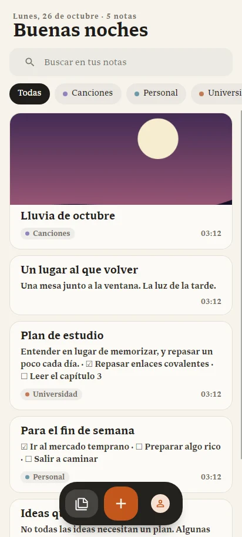

Take Notes en el teléfono
La app para Android tiene el mismo papel, la misma letra y la misma calma que en el computador, pensada para el dedo. Pesa unos 22 MB y funciona en Android 8 o más nuevo.

Instalar
Take Notes para Android está en Google Play. Tócalo desde el teléfono e instálalo como cualquier app. Google Play la mantiene al día.
¿La tenías instalada desde esta página? Instala la versión de Google Play encima. No hace falta desinstalar y tus notas se quedan. La versión de la página ya no recibe actualizaciones.
Tus notas
- La barra de abajo: Mis notas, Papelera, el botón + para una nota nueva, Buscar y tu cuenta.
- Nueva nota: el botón + pide el nombre. La barra de formato queda justo encima del teclado.
- Buscar: la barra de arriba busca en el nombre y el texto.
- Menú de una nota: mantén pulsada su tarjeta para moverla, ponerle portada o eliminarla.
- Papelera: al eliminar, el aviso ofrece Deshacer. Las notas eliminadas esperan 30 días en la Papelera de la barra de abajo: ahí las restauras o las borras para siempre, con una pregunta antes.
El editor del teléfono tiene negrita, cursiva, subrayado, resaltado, título, viñetas, lista numerada, cita, deshacer y rehacer. Con el botón Insertar (el cuadrado con +) agregas una tabla del tamaño que elijas o una imagen de tu teléfono. Con el cursor dentro de una tabla aparece el botón Tabla, para agregar o quitar filas y columnas, combinar celdas o marcar la fila de encabezado.
Enlaces entre notas
Toca Enlazar (el eslabón con +) en la barra de formato y elige la nota. Escribe para buscarla por su nombre; si no existe, la última opción la crea en el momento, en la misma carpeta. Cuando el cursor queda sobre un enlace, aparece Abrir «nota» arriba del teclado para ir a ella.
Lyrics en el teléfono
En el menú ⋯ de una nota, Activar Lyrics (o Abrir la letra) muestra la letra a pantalla completa, con el fondo que elegiste para ella. Con Adjuntar o cambiar la canción… eliges una canción del teléfono; sin canción, la letra avanza con un reloj interno.
- Reproducir o pausar con el botón grande; ⏪ y ⏩ saltan 5 segundos, y la barra te deja ir a cualquier momento.
- Sincronizar, arriba a la derecha: aparece un botón grande Marcar con la línea que sigue. Tócalo cuando empiece cada línea. Para rehacer una parte, toca la línea desde donde quieres volver a marcar.
- Sin sincronizar, tocar una línea con tiempo salta a ese momento.
- Los tiempos se guardan solos, y Atrás vuelve a la nota.
Carpetas
- Las carpetas aparecen como fichas arriba de la lista. Toca una para entrar y ver sus subcarpetas; ‹ o el botón Atrás vuelven un nivel.
- + Carpeta crea una carpeta dentro de la que estás viendo.
- Mantén pulsada una ficha para cambiarle el nombre o quitarla. Al quitarla, sus notas suben un nivel; nada se borra.
- Mover a carpeta… abre una hoja con todas tus carpetas, y desde ahí también puedes crear una nueva.
Sincronizar con el computador
Inicia sesión en Cuenta con la misma cuenta del computador y activa Sincronizar mis notas. Para sincronizar en el momento, tira la lista hacia abajo. Más en Cuenta y sincronización.
Tu cuenta y los reportes
- Eliminar cuenta, al final de Cuenta, borra tu cuenta, tus notas sincronizadas y tu foto. Escribe tu correo para confirmar. Las notas guardadas en el teléfono se quedan.
- Reportar un problema, también en Cuenta, envía un error, un cierre inesperado o una idea, con una captura si quieres. Nunca se envía el contenido de tus notas.